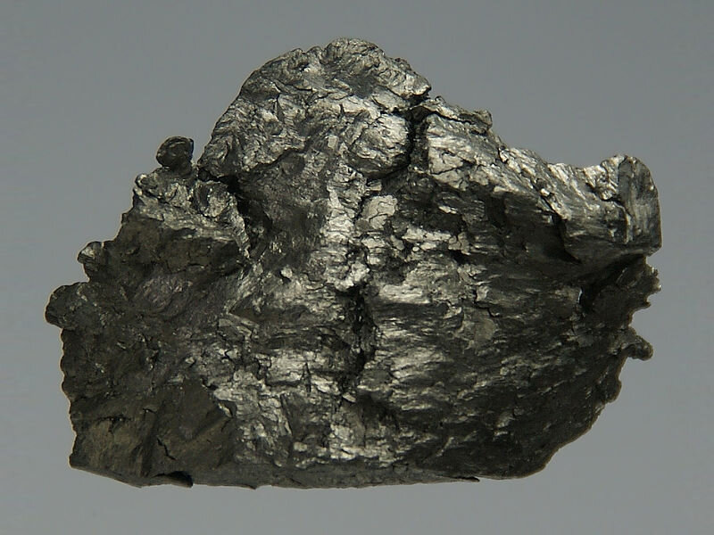

Гадолиний

Гадоли́ний (химический символ — Gd, от новолат. Gadolinium) — химический элемент 3-й группы (по устаревшей классификации — побочной подгруппы третьей группы, IIIB) шестого периода периодической системы химических элементов Д.И. Менделеева с атомным номером 64.Относится к семейству «Лантаноиды».Простое вещество гадолиний — это мягкий редкоземельный металл серебристо-белого цвета.
Гадолиний открыт в 1880 году Жаном де Мариньяком, который спектроскопически доказал присутствие нового элемента в смеси оксидов редкоземельных элементов. Элемент был назван по имени финского химика Юхана Гадолина.
Конфигурация внешних электронных оболочек атома 4f75s25p65d16s2. В соединениях обычно проявляет степень окисления +3. Гадолиний – серебристо-серый металл, до 1262 °C устойчива модификация с гексагональной решёткой, tпл 1312 °C, tкип 3250 °C, плотность 7901 кг/м3. Ферромагнетик, точка Кюри 293,4 К. Металлический гадолиний медленно окисляется на воздухе. Гадолиний получают при переработке руд, содержащих редкоземельные элементы. Гадолиний – компонент магнитных сплавов, соединения гадолиния входят в состав некоторых люминофоров.